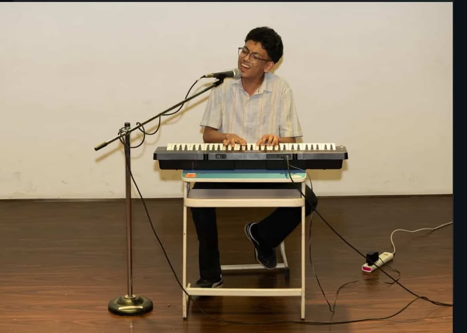

In an era defined by instant gratification, the concept of waiting has undergone a radical transformation. We treat friction—whether a slow-loading webpage, a delayed flight, or a literal line at a coffee shop—as a systemic failure. We have engineered our
